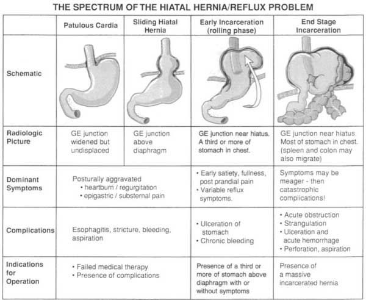
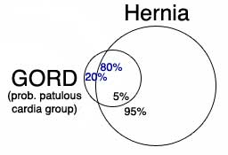
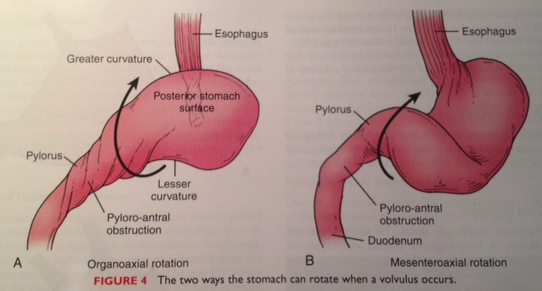

Hiatal Hernia
DEFINITION
A disease that has captured the imagination of the public, because
it is alliterative and therefore fun to say.
It is also popular because a multitude of dietary indiscretions can
be ascribed to the hernia.
This condition is commonly considered together with GORD.
"For the first half of the
twentieth century, surgeons were mesmerized by the idea that
something called a hernia, which looked like a hernia and caused
pain in the area of the affliction, should be managed like a
hernia". (Shackelford's).
* Not the same as a para-hiatal hernia, where there is another hole
next to the diaphragm that the stomach passes through (very rare).
D I A B M I M
INCIDENCE
Common; one radiological series estimated 10% general populace.
- this is probably an overestimate as biased population selection.
- however if you push on someone's stomach, >50% of people will
get one.
F>M
5th & 6th decades peak.
AETIOLOGY
Combination of attenuation of hiatal attachments (phreno-oesophageal
ligament)
Combined with upwards pull of longitudinal oesophagus muscles over
time.
D I A B M I M
BIOLOGICAL BEHAVIOUR
Pathophysiology
3 types - sliding, para-oesophageal & mixed.
Sliding hernia (Type I)
Most common.
The gastro-oesophageal junction & cardia slide upwards into the
mediastinum.
This encourages incompetence of the LOS because the distal
oesophagus is exposed to the relatively negative intrathoracic
pressure (and crus sling acting on wrong place).
- majority are fairly harmless
- alone do not constitute a diagnosis of GORD or indication for
repair.
- usually needs another factor or two to produce GORD; and ~20% of
GORD pts have no hernia (patulous cardia; see below).
- if 10% of the population have a hiatal hernia, only 5% of this
group will have pathological reflux (Shackelford).
- however the larger its size, the greater the chance of GORD.


Para-oesophageal (Type II); Rolling Hernia
Less common; usually in the elderly.
The OGJ remains fixed in the abdomen, but the hiatal defect provides
space for viscera to migrate upwards.
- cause of hiatal defect not well understood; may be:
i) developmental, related to diaphragm development.
ii) increased abdo-thorax pressure gradient.
iii) altered collagen metabolism
iv) depletion of elastic fibres in phreno-oesophageal ligament with
ageing.
The fundus of the stomach rotates and herniates through the hiatus
into the mediastinum in a large sack.
- the relatively negative intra-thoracic pressure encourages
migration.
- can be huge, rarely with even colon and spleen intra-thoracically.
- anterior to and alongside lower thoracic oesophagus.
These cause symptoms (usually)
- may lead to bleeding, obstruction, strangulation, perforation.
Convincingly argued that massive para-esophageal hernia is almost
always an 'end-stage' sliding hernia.
- this observation based on operative records of OGJ pt, manometry
and endoscopic definitions.
When >30% gastric migration = "giant para-esophageal hernia"
When nearly all = "intrathoracic stomach".
Mixed (Type III)
A combination of the above.
Type IV
Contains other contents eg intestine, spleen, colon.
Mass effect pathophysiology
Volvulization; dependent portion prevents evacuation of swallowed
air, collects in volvulized body.
--> distention, compresses esophagus, heart, lungs.
--> engorged gastric mucosa following distension (and venous
obstruction), causes chronic blood loss
Rotation
Either organoaxial
- greater curvature horizontally on its longitudinal axis
or, rarely, mesenteroaxial
- vertically on a line parallel to the gastrohepatic ligament.

MANIFESTATIONS
Symptoms
Sliding
A majority (but not all) people with severe reflux have one.
Does not cause any symptoms in itself.
Para-esophageal
Pain and discomfort after meals.
Episodes of more acute pain (probably twisting).
Can get dysphagia, nausea / vomiting, palpitations (heart mass
effect) and aspiration.
Can present with strangulation - acute abdominal emergency.
Fe-deficiency anaemia as above.
INVESTIGATIONS
CXR may show a fluid level in the chest behind the heart.
Video-esophagram
Especially helpful. Shows anatomy, volvulus, other organs in
chest, shows transport of barium for motility.
--> if poor barium transit, consider motility disorder.
Endoscopy
Necessary investigation; assess herniation, degree of
volvulus, extent of venous engorgement and ulceration, esophagitis.
Motility studies
Excludes a motility disorder prior to surgery.
LES pressure may be high from mass effect.
Can assess LES location for correlation to acid studies.
pH monitoring
Not routine as do not change management.
MANAGEMENT
Who to operate on?
Those with symptomatic PEH need surgery.
Management of significant PEG with no or mild symptoms more
controversial.
- incarceration and strangulation are actually quite rare when aged
> 60
- recent literature would suggest emergency operations not as
difficult or dangerous as believed in the past.
- on the other hand, there is a risk, of aspiration, gastric
incarceration, obstruction, bleeding, strangulation, perforation and
death
- and lap operations have low morbidity.
Bottom line:
- discuss it with the patient. most of those who wish to
travel or avoid risk have it repaired, particularly if they can be
done laparoscopically.
Approach
Laparoscopic approach has greatly reduced mortality (now 0.5%) and
morbidity (mean stay 3 days).
Complex; best done by an OG surgeon.
- risk of perforation, risk to post vagus and might need complex
steps.
Excision of the sac
Sac often extends high in chest and adheres to crus, pleura,
pericardium, even inferior pulmonary veins.
Displacement of the gastrohepatic ligament superiorly into chest can
cause confusion for the inexperienced.
1. Reduce organs into stomach.
- may need an extra port to keep them reduced.
2. Separate sac in an avascular plane at lip of hiatus; bluntly
dissect off the intrathoracic structures.
- should be no bleeding
3. Reduce and divide sac down to anterior oesophagus and around GEJ.
- don't injure the vagus, but do completely dissect and excise the
sac.
4. Isolate and protect the vagus
- often lies to the R of the esophagus and aorta, close to post
chest wall.
- the fundo should pass between the esophagus and posterior vagus.
Perform a fundoplication
- perform it over a 60Fr Bougie
- place it in the R anterolateral position
- do use proline and pledgets.
- close crura with Ethibond and pledgets, large figure-8 sutures.
- these guys in Cameron prefer a mesh.
Management of Short Esophagus
E.g. from stricture, Barret's or shown on manometry.
- a result of progressive mucosal disease.
Found when cannot mobilize distal 3cm of esoph into the abdomen.
- less than 2cm of esoph below the diaphragm means inappropriate
tension on repair and can herniate or disrupt over time.
- remember diaphragm pulls on esophagus 30,000 x per day
Perform a gastroplasty lengthening procedure (Collis).
- pass a 48Fr bougie.
- excise a wedge of fundus along the greater curvature to make an
extra 'length' of esophagus.
- done with an endo-GIA, parallel along the bougie
- then horizontally to remove the fundal wedge.
- difficult angles; may need another retracting port in R flank at
umbilicus.
Nissen fundo then performed around the neo-oesophagus.
Complications are ischaemia or leak, stricture and bleeding.
--> don't devascularize the lesser curvature.
Note on the Patulous Crura
Common for crural development to be imperfect.
- may be >4cm or mire circular than oval.
To prevent reherniation, pledgets of Surgisis can be used to
reinforce the closure.
Ethibond suture.
Incorporate large bites of crura and pass through surgisis.
Avoid tension or strangulation; have a bougie down.
Can use mesh, eg.g absorbable vicryl mesh.
Recurrence
Up to 10% but widely varies in reports.
Short esophagus or wide crura are most common causes.
Avoid by having good technical management of these problems.